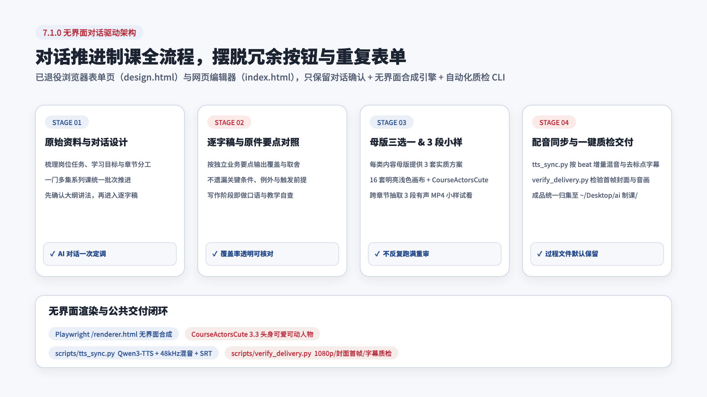

对话驱动制课 · 全新 7.1 演示
对话推进一门好课，无需繁琐网页操作
44 秒了解当前 7.1.0 完整体验：移除冗余网页表单与编辑器，在对话内完成大纲与原件对照，直接调用 CourseActorsCute 3.3 头身可爱人物、16 套明亮浅色画布、本地 didi / pipi 配音与自动化交付质检。
44 秒 · Qwen3-TTS didi / pipi 实配音 + Teaching-Native 原库音效 + verify_delivery.py 校验通过
下载 1080p MP4 · 下载无标点 SRT 字幕
01 · 无界面对话流
聚焦对话与内容质量
去除冗余浏览器表单（design.html）与网页时间轴编辑器（index.html），所有立项、改稿、母版三选一与局部回改通过自然对话推进。
02 · 统一角色与自动质检
可爱可动人物 + 闭环验收
全量使用 actors_v3_cute.js（3.3 头身、零滑步落地、原版 KG 胸标），交付前通过 tts_sync.py 与 verify_delivery.py 一次校验首帧封面、字幕与音画规范。
核心能力实渲画廊
